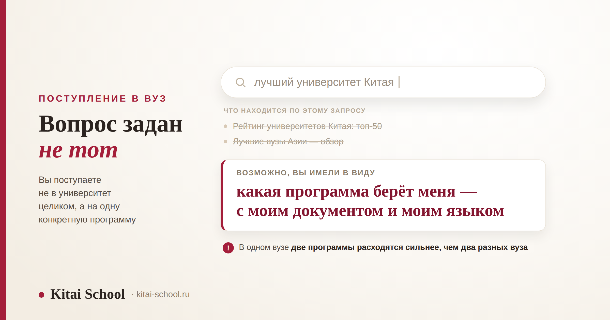
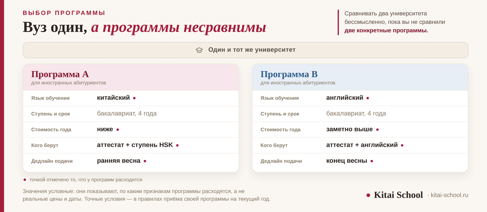

Образование в Китае
Поступление в вуз Китая: как выбрать университет и что важнее рейтинга


Почти все начинают одинаково: ищут список лучших университетов Китая, открывают рейтинг и выбирают строчку повыше. Дальше выясняется, что подавать документы некуда: у вуза нет одной приёмной комиссии и одних правил. Учиться вы будете не в университете вообще, а на конкретной программе для иностранцев — и у неё свой язык обучения, свой срок, своя цена, свои требования и свой дедлайн. Разберём, по каким признакам программы сравнивают, что значат ярлыки 985 и 211, как город меняет расходы и какой документ читать вместо рейтингов.
Выбирают не вуз, а программу. В одном университете две программы для иностранцев отличаются сильнее, чем два разных вуза. Сравнивать их надо по пяти признакам: язык обучения, ступень и срок, стоимость, кого берут и дедлайн. Ярлыки 985 и 211 говорят о положении вуза в стране, но не о вашей программе. Город меняет расходы сильнее рейтинга. А читать надо 招生简章 — правила приёма конкретной программы на текущий год.
Главная подмена: выбирают вуз, а учиться будут на программе
Вопрос «какой университет в Китае лучший» кажется разумным, но ответа на него нет — по крайней мере такого, который бы вам пригодился. Дело не в том, что рейтинги плохие. Дело в том, что вы поступаете не в университет целиком.
Для иностранных абитуриентов вузы открывают отдельные программы. Это самостоятельная единица со своими правилами: у неё написано, кого берут, на каком языке идут занятия, сколько длится обучение, сколько стоит год и до какого числа принимают документы. В одном и том же университете могут одновременно работать программа бакалавриата на китайском, программа на английском и подготовительное отделение — и это три разные истории.
Отсюда следует вещь, которая экономит больше всего времени. Сравнивать два университета бессмысленно, пока вы не сравнили две конкретные программы. Разница между программой на английском и программой на китайском внутри одного вуза обычно больше, чем разница между двумя вузами соседних строчек рейтинга.
И правильный вопрос звучит не «куда мне поступать», а так: какие программы вообще берут человека с моим документом, моим языком и моим бюджетом. Их окажется меньше, чем кажется, и выбирать придётся уже из короткого списка.
Если вы ещё не выяснили свой путь — с аттестатом, с дипломом колледжа или с дипломом бакалавра, — начните с него: это отсекает большую часть вариантов за пять минут. Все четыре входа разобраны в статье про обучение в Китае для русских.
Пять признаков, по которым программы действительно различаются
Это тот набор, по которому программы можно поставить рядом и сравнить. Всё остальное — детали, которые смотрят потом.
| Признак | Что смотреть | Почему это решает |
|---|---|---|
| Язык обучения | китайский или английский | от него зависят требования к вам, цена и то, сколько вообще есть вариантов |
| Ступень и срок | 本科, 硕士 или подготовительное 预科 | сколько лет вы проведёте в стране и что получите на выходе |
| Стоимость года | обучение, общежитие и страховка считаются отдельно | суммы отличаются даже у двух программ одного вуза |
| Кого берут | возраст, документ об образовании, уровень языка | здесь отсеивается большая часть кандидатов |
| Дедлайн | своя дата у каждой программы | у стипендиальных программ сроки обычно раньше, чем у платных |
Четвёртая строка — самая недооценённая. Люди месяцами выбирают между вузами, а потом узнают, что на обе программы их не берут: не тот возраст, не тот документ, не та ступень языка. Проверять это нужно первым делом, а не последним, — и тогда список сразу становится коротким и честным.
Про язык стоит сказать отдельно. Программа на английском снимает требование по китайскому при поступлении, но не снимает его в жизни: учиться вы будете в Китае, и вне аудитории английский помогает мало. Если программа идёт на китайском, обычно просят сертификат HSK — какую именно ступень, написано в правилах приёма. А подготовительный год и языковые курсы — это разные вещи, и разницу мы разбирали в статье про языковые курсы в Китае.
Совет, который экономит недели. Заведите таблицу с этими пятью столбцами и заполняйте её по мере чтения. Держать в голове условия даже трёх программ не получается: к четвёртой они перемешиваются, и вы начинаете путать, где какой дедлайн. А в таблице сразу видно, какие программы вообще сопоставимы, а какие вы зря поставили рядом.

985, 211 и «Двойной первый класс»: что это и когда важно
Эти цифры встречаются в любом обсуждении китайских вузов, и обычно их объясняют одним словом «элитные». Стоит разобраться чуть точнее, потому что от этого зависит, обращать на них внимание или нет.
985工程 и 211工程 — это две государственные программы поддержки университетов, запущенные в девяностые годы. Вузы, попавшие в них, получали дополнительное финансирование, и со временем номера превратились в неформальные ярлыки: «вуз из 985» значит «сильный и известный».
Важная деталь, о которой часто не говорят. Формально обе программы уже заменены. Во второй половине 2010-х им на смену пришла программа 双一流 — «Двойной первый класс». Но в разговорной речи, в объявлениях о работе и в родительских ожиданиях старые ярлыки никуда не делись, и вы будете встречать их постоянно.
| Ваша ситуация | Насколько важен ярлык |
|---|---|
| Планируете работать в Китае после выпуска | имеет значение: работодатели смотрят на вуз |
| Собираетесь учиться дальше, в магистратуре или аспирантуре | имеет значение при отборе |
| Едете за языком и средой | почти не важен: смотрите на программу и город |
| Вернётесь с дипломом в Россию | важнее процедура признания диплома, чем ярлык |
И то, что стоит держать в голове при любом раскладе. Ярлык описывает университет, а не вашу программу. Сильный вуз может вести слабую программу для иностранцев, а вуз попроще — сильную и хорошо организованную. Узнать это можно только по правилам приёма и по отзывам тех, кто там учился. Как устроены ступени и что такое 本科, разобрано в статье про бакалавриат в Китае.
Город меняет расходы сильнее, чем строчка в рейтинге
О городе думают в последнюю очередь, а он определяет почти весь ваш быт на несколько лет вперёд. И на деньгах он сказывается заметнее, чем разница между двумя вузами.
Студент выбирал между двумя программами: одна в большом приморском городе, вторая в городе поменьше внутри страны. Вуз в первом случае был известнее, и он уже почти решил.
Мы сели и посчитали не стоимость обучения, а год целиком: жильё, еду, транспорт, перелёты домой. Разрыв оказался такой, что за четыре года набегала сумма, сопоставимая с годом обучения.
Он выбрал второй город. Через полгода написал, что говорит по-китайски гораздо больше, чем рассчитывал: русскоязычной компании там просто не собралось. Про известность вуза он с тех пор не вспоминал ни разу.
Разберём по порядку. Первое — стоимость жизни. Общее правило простое: чем крупнее город, тем дороже жильё, еда и транспорт. Разница между большим приморским городом и городом внутри страны бывает существенной, и за годы учёбы она накапливается. Из чего складываются повседневные расходы, разобрано в статье о том, дорого ли в Китае.
Второе — языковая среда, и здесь ждёт сюрприз. Занятия везде идут на путунхуа, но в быту на юге часто звучит местная речь. Вы можете оказаться в городе, где в университете вас понимают прекрасно, а на рынке разговор идёт на языке, которого вы не учили. Это не беда, но это стоит знать заранее — про то, как устроена речь в разных частях страны, есть отдельный разбор о том, как разговаривают в Китае.
Третье — сколько вокруг иностранцев. Здесь две стороны. Там, где иностранцев много, проще первые месяцы: есть кому подсказать, документы оформляют привычно. Но и говорить по-китайски вы будете меньше — вокруг сложится русскоязычная или англоязычная компания, и язык пойдёт медленнее. Там, где иностранцев мало, тяжелее вначале и быстрее потом.
Что читать вместо списков: 招生简章
Есть один документ, который отвечает на все ваши вопросы сразу, и почти никто его не открывает, потому что не знает, как он называется.
招生简章 (zhāoshēng jiǎnzhāng) — это правила приёма конкретной программы на конкретный учебный год. Не общая страница вуза, не рекламная брошюра, а рабочий документ приёмной комиссии. Там написано ровно то, что вам нужно: кого берут, какие документы подать, до какого числа, сколько стоит год и что входит в эту сумму.
| Раздел | На что смотреть в первую очередь |
|---|---|
| Кого принимают | возраст, гражданство, документ об образовании, требуемая ступень языка |
| Документы | что именно и в каком виде: перевод, заверение, оригинал или скан |
| Сроки | дата начала приёма и дедлайн — у каждой программы свои |
| Стоимость | обучение отдельно, общежитие отдельно, страховка отдельно |
| Контакты | адрес отдела по работе с иностранными студентами, 留学生办公室 |
Год издания — единственное, что нужно проверить до чтения. Правила выходят заново каждый год, и прошлогодний документ вводит в заблуждение: сроки сдвигаются, суммы меняются, требования к языку иногда тоже. Если на сайте выложена только старая версия, это нормально в межсезонье — значит, новую ещё не опубликовали, и стоит написать в отдел и спросить, когда ждать.
Искать этот документ надо на сайте самого университета, в разделе для иностранных студентов. Сводные площадки с подборками программ удобны, чтобы составить список кандидатов, но окончательные данные всегда берите с сайта вуза: на сторонних ресурсах информация устаревает быстрее. Когда подавать и в каком порядке всё делать — в разборе про поступление после 11 класса.
Короткий список: пять-семь программ вместо одной
Ошибка, которая стоит года: выбрать одну программу, влюбиться в неё и подать только туда. Отказ или пропущенный срок — и следующий шанс появится через год.
Рабочий подход — короткий список. Пять-семь программ, разложенных по трём корзинам.
| Корзина | Сколько | Что это |
|---|---|---|
| Сложные | одна-две | вы подходите по требованиям впритык; шанс есть, но небольшой |
| Реалистичные | три | вы уверенно проходите по формальным требованиям |
| Запасные | одна-две | берут почти наверняка, и вы готовы туда поехать |
Важное условие для последней строки: запасной вариант должен быть таким, куда вы действительно согласны поехать. Программа, на которую вы подали «на всякий случай», а потом отказались, — это потерянное время и испорченное впечатление.
Сравнивать программы в списке удобно по той же таблице из пяти признаков. Заведите её в любом виде — хоть в тетради — и заполняйте по мере чтения правил приёма. Через три-четыре программы вы начнёте замечать закономерности и поймёте, какие условия для вас на самом деле принципиальны.
И про деньги, раз уж речь о нескольких заявках. У стипендиальных программ дедлайны обычно раньше, чем у платных, поэтому список надо собирать заранее, а не в последний месяц. Какие бывают гранты и как распределяются места — в разборе про гранты на обучение в Китае; что именно покрывает стипендия — в статье про стипендию CSC в Китае.
Что мы здесь не пересказываем
Эта статья про выбор: куда подавать и по каким признакам сравнивать. Всё, что касается пути и документов, разобрано отдельно и подробнее.
| Ваш вопрос | Где разобрано |
|---|---|
| Какой у меня путь: четыре входа в вуз | обучение в Китае для русских |
| Какие документы просит вуз | поступление в Китай без ЕГЭ |
| Когда что подавать, если я выпускник школы | поступление после 11 класса |
| Засчитают ли диплом колледжа | поступление в Китай после колледжа |
| Как устроена магистратура | магистратура в Китае |
| Что значит «бесплатно» и где нужны свои деньги | бесплатное образование в Китае |
| Пять путей к оплаченному месту | как поступить в Китай на бюджет |
| Переезд и первые недели на месте | переезд в Китай |
И главное, ради чего всё это собиралось. Пять открытых страниц с правилами приёма дают более точную картину, чем месяц чтения рейтингов и форумов. Обычно после них оказывается, что выбор гораздо уже, чем казался: программ, которые берут человека с вашим документом, вашим языком и вашим бюджетом, не так много. И это хорошая новость — выбирать из пяти проще, чем из тысячи.
Частые вопросы (FAQ)
Как выбрать вуз в Китае для поступления?
Начинать надо не с вуза, а с программы. У каждой программы для иностранцев свой язык обучения, срок, стоимость, требования и дедлайн, и в одном университете две программы могут отличаться сильнее, чем два разных вуза. Поэтому сравнивайте не строчки в рейтингах, а конкретные программы по пяти признакам: язык, ступень и срок, цена, кого берут и до какого числа принимают документы.
Что значат 985 и 211 и важно ли это при поступлении?
Это ярлыки двух государственных программ поддержки вузов, запущенных в девяностые годы. Во второй половине 2010-х им на смену пришла программа «Двойной первый класс» (双一流), но прежние обозначения остались в обиходе. Ярлык говорит о положении вуза в стране и может пригодиться, если вы планируете работать в Китае или учиться дальше. О том, как устроена конкретная программа для иностранцев, он не говорит ничего.
Можно ли подавать документы в несколько вузов сразу?
Да, и так обычно и делают. Разумно собрать короткий список из пяти-семи программ: одну-две сложные, несколько реалистичных и одну-две запасные. Это страхует и от отказа, и от срыва по срокам: дедлайны у программ разные, и если вы поставили всё на одну, а она не сложилась, сезон подачи придётся ждать следующий.
Нужно ли знать китайский, чтобы поступить в университет Китая?
Зависит от программы. Часть программ идёт на английском, и тогда китайский при поступлении не требуют. Для программ на китайском обычно просят сертификат HSK, и какую ступень — написано в правилах приёма конкретной программы. Учиться на китайском обычно дешевле, а выбор программ шире.
Где смотреть требования конкретной программы?
В документе, который называется 招生简章 (zhāoshēng jiǎnzhāng) — правила приёма. Его публикуют на сайте вуза в разделе для иностранных студентов, и он выходит заново каждый год. Там написано главное: кого берут, какие документы нужны, до какого числа принимают и сколько стоит год. Прошлогодняя версия не годится — сроки и суммы меняются.
В каком городе Китая учиться дешевле?
Общее правило простое: чем крупнее город, тем дороже жильё и жизнь. Но считать надо не только деньги. В крупных городах больше иностранцев и проще первое время, зато по-китайски вы будете говорить меньше. А на юге в быту часто звучит местная речь, и путунхуа вокруг вас окажется меньше, чем вы рассчитывали.
Не уверены, какую ступень языка успеете сдать до подачи? На диагностическом занятии посмотрим ваш уровень и посчитаем, что реально успеть к дедлайну. Оставить заявку или написать в Telegram.
Дальше по теме: четыре входа в вуз — обучение в Китае для русских; документы — поступление в Китай без ЕГЭ; календарь выпускника — поступление после 11 класса; после колледжа — поступление в Китай после колледжа; ступень 本科 — бакалавриат в Китае; магистратура — магистратура в Китае; гранты — гранты на обучение в Китае; стипендия CSC — стипендия CSC в Китае; бюджетные пути — как поступить в Китай на бюджет; что покрывает «бесплатно» — бесплатное образование в Китае; языковой год — языковые курсы в Китае; экзамен — сертификат HSK; цены на жизнь — дорого ли в Китае; речь в разных частях страны — как разговаривают в Китае; переезд — переезд в Китай.
Источники
- Правила приёма 招生简章 на сайтах китайских университетов — единственное место, где написаны условия вашей программы на текущий год.
- Практика Kitai School — сопровождение тех, кто выбирал программу и уехал учиться.
- Типичная картина, а не строгое правило: условия, сроки и стоимость различаются у программ и меняются по годам, а языковая среда в городах описана обобщённо. Проверять нужно на странице своей программы.
Пусть выбор будет лёгким! 前程似锦！